When the welcome experience isn't welcoming
How I unified Walmart's visitor check-in from twelve isolated, inaccessible systems into a single accessible service across every US and India campus - and why the hardest part had nothing to do with screens.
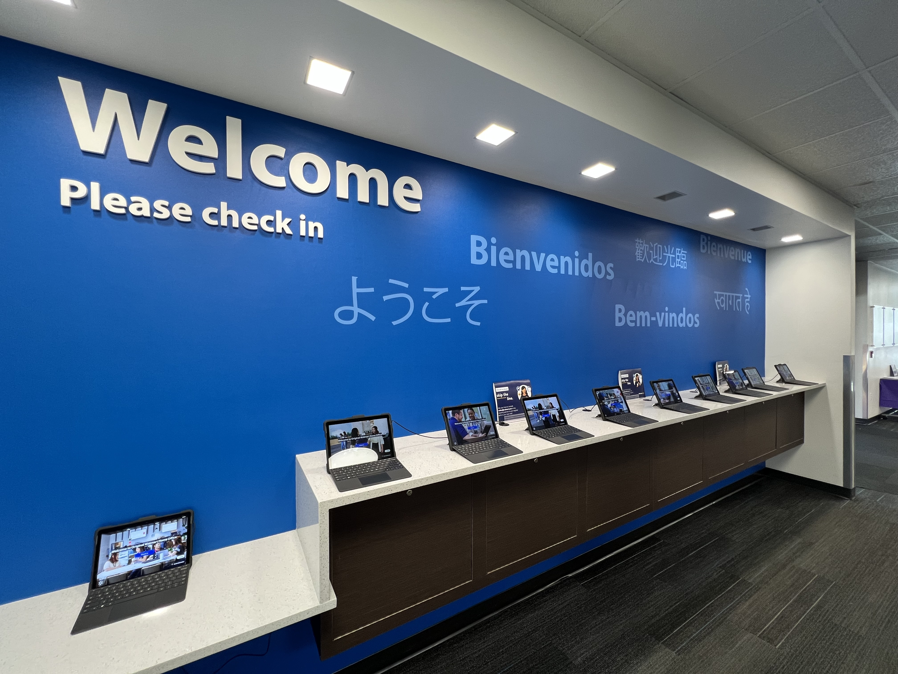

A $500B company with a clipboard at the front door
When visitors arrive at one of Walmart's campuses, their first impression begins at the front desk. But each site: the 350-acre Home Office in Bentonville, the 338,000 sq. ft. Sunnyvale campus, the India Development Center in Bengaluru and Chennai, had its own process, technology, and security requirements. The result was a fragmented experience and a system that couldn't scale.
The California facilities required NDA signing. The India Development Center required device registration. The 8th & Plate food court needed a simplified flow for short-stay visitors. None of these variants talked to each other, and none had been designed with accessibility in mind.
Visit is a connected ecosystem, and decisions on any surface directly impact every other. A visitor who used a wheelchair had no guaranteed accessible path through check-in. A host wasn't reliably notified when their guest arrived. The legacy interface felt less like a welcome and more like a checkpoint.
Sole lead designer, end to end
I joined as the sole lead designer on a cross-functional team: a product manager, engineers across two squads, a facilities program manager, and regional operations leads in both Bentonville and Bengaluru. I took ownership of a system with no unified design, no shared logic across campuses, and no accessibility compliance - and redesigned it from the ground up.
I owned every surface: the kiosk interface, the preregistration web flow, the email notification system, and the admin portal. I also led the accessibility strategy - WCAG 2.1 AA compliance shaped the interaction model from day one.
What I inherited had real constraints. Each campus had built its own solution to the same problem, optimized for local requirements with no shared architecture and no cross-campus visibility.
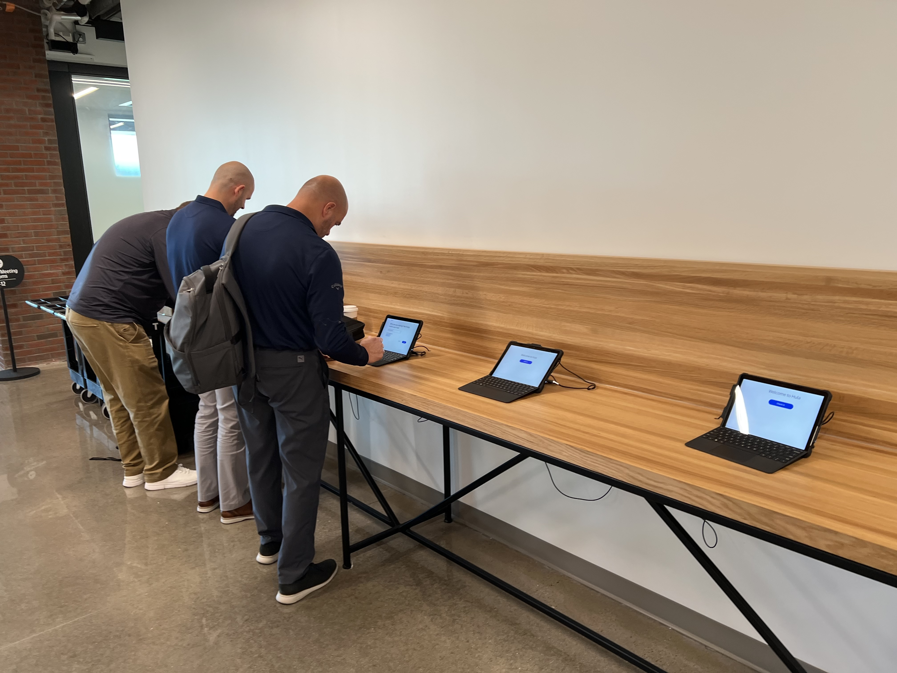
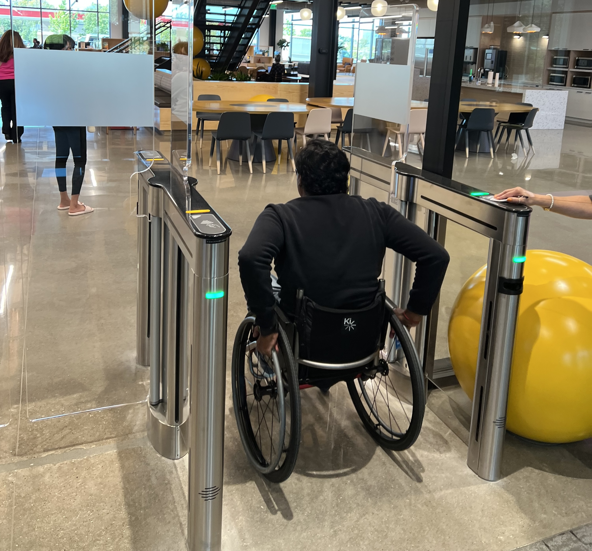
The problem the software couldn't see
I spent time at check-in desks across campuses before touching any design tools. Every existing implementation had been built from the inside out: what does the system need to capture? Nobody had asked what the visitor, the host, or the front-desk associate actually needed to do. The screens were fine. The service around them had no connective tissue.
The check-in screen was just one moment in a larger chain: visitors, hosts, front-desk associates, security staff, and security managers all had different goals and zero shared visibility. None of the existing implementations connected those groups. Each ended at the screen.
Three findings that changed the direction of the project:
1. Preregistration was the highest-leverage fix nobody had prioritized
Visitors who arrived pre-registered had dramatically smoother check-ins - but most visitors walked in cold, not because hosts didn't want to prep them, but because the preregistration tool existed in a separate system nobody knew about. The kiosk was doing the work that should have happened before anyone arrived.
2. Accessibility failures were creating invisible operational load
Front-desk associates were routinely stepping in to complete check-in on behalf of visitors who couldn't navigate the existing interface - touch targets too small, no keyboard path, contrast ratios that failed in direct sunlight. None of this showed up in any usage data. The workaround had become the process.
3. Hosts had no real-time awareness when their visitor arrived
Visitors would complete check-in and then wait in the lobby (sometimes for extended periods) because hosts had no notification. Security associates had flagged this repeatedly. There was no mechanism in any existing campus system to solve it.
Getting everyone to agree was the real design challenge
Getting alignment took longer than the design itself. Each campus stakeholder had a different definition of "welcoming", and sequential review cycles were stalling progress. Leadership could engage with visual concepts more readily than with information architecture or service flows, so the landing page became a proxy for confidence in the entire system. Every review became a debate about hero images and background videos.
I recognized what was actually happening: stakeholders hadn't yet built a shared mental model of the system, so the landing page became the place that anxiety surfaced. Every review anchored on the one thing they could see and react to.
Instead of continuing sequential reviews, I restructured the process. I presented the full range of landing page directions simultaneously (video backgrounds, image carousels, static photography) with each option's tradeoffs made explicit and tied back to the campus experience goals we'd already aligned on. By making the decision space visible rather than funneling toward a single recommendation, I gave stakeholders a way to converge without feeling overruled.
Three user groups, one coherent service
I mapped the full experience across three user groups: walk-in visitors, invited visitors who pre-registered, and Walmart associates acting as hosts. Each journey exposed different failure points. Together they revealed where the service needed to connect across touchpoints and teams.
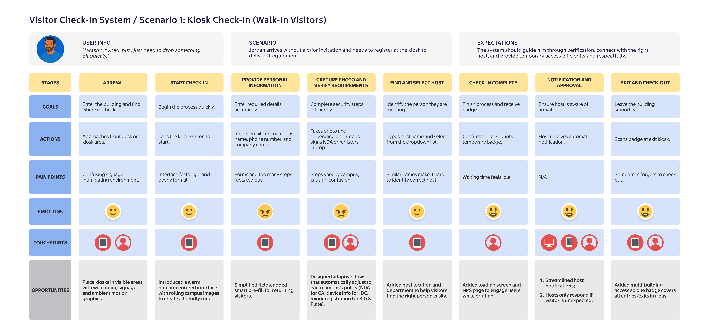
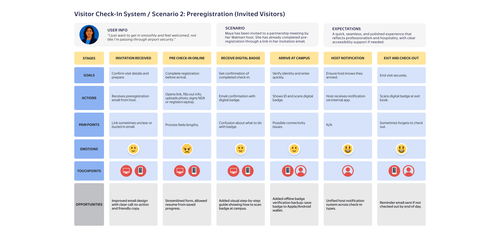
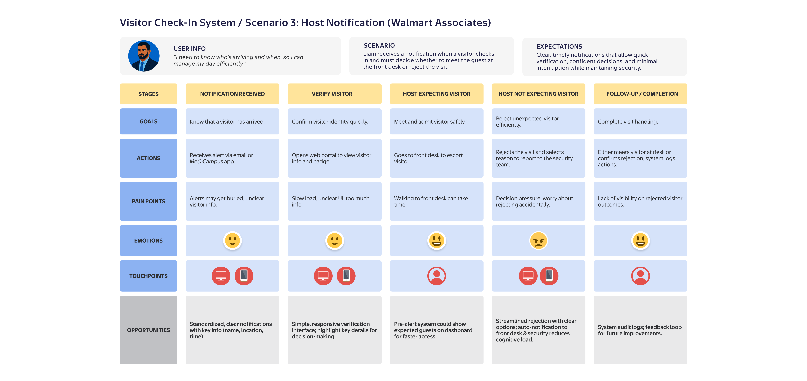
Unified UI, Local Logic
The core design challenge was building one system that could adapt to genuinely different campus requirements without fracturing the experience. The answer was a configurable flow architecture: the same interface, with location-aware steps that activate based on facility type. NDA signing for California. Device registration for IDC. A streamlined short-form for 8th & Plate. All on one codebase, all on the same Surface Go hardware.
For walk-in visitors (who arrive with no advance context, often stressed, often running late), the kiosk had to be operable in under 60 seconds without instruction. I prioritized progressive disclosure (one decision per screen), large touch targets sized for the Surface Go's compact display, and immediate error recovery. The result handles the 80% case fast and routes the 20% exceptions without creating lobby bottlenecks.
Check-out and multi-building access
Visitors moving between buildings scan their badge at each entry and exit point, with no repeated full check-ins required. Every scan syncs in real time to the Visit Admin portal, giving security teams a complete, time-stamped record of campus movement. This live tracking was a net-new feature: the legacy system had no cross-building visibility at all.
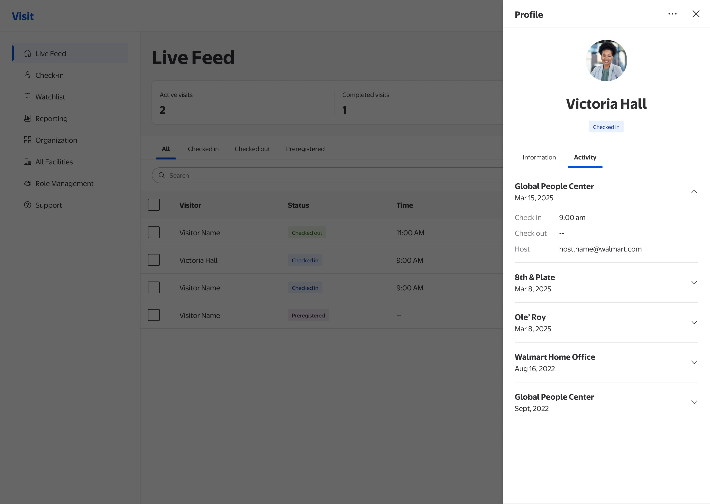
Preregistration: front-loading the friction
Visitors who arrived pre-registered cleared check-in significantly faster. The problem: most visitors arrived cold, not because hosts didn't want to prep them, but because the preregistration tool existed in a separate system that almost nobody knew about. I connected the preregistration link directly to the host's calendar invite, so sending the invite and sending the prep link became a single action. The visit experience was now shaped before the visitor left home.
The preregistration flow is also where the platform's configurability is most visible. The same flow activates location-specific steps silently in the background - visitors only ever see what their specific visit requires.
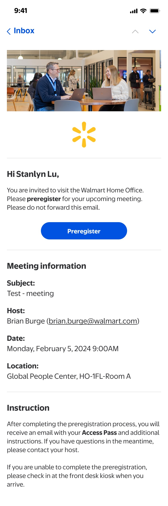
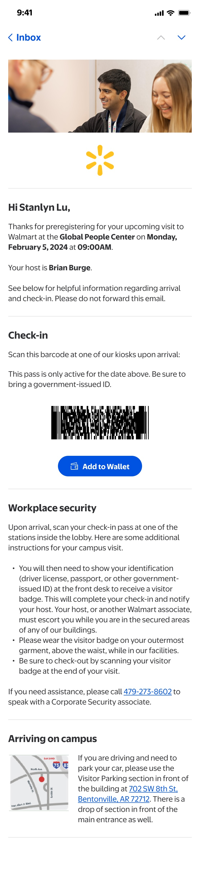
Host notification: closing the loop
Any completed check-in (whether a walk-in visitor at the kiosk or a preregistered visitor scanning their digital badge) triggers an immediate notification to the named host. In the legacy system nothing happened at this point. I designed a real-time alert that defaults to no action required: if the host is expecting the visitor, they simply go to the front desk and escort them in. Only if the visitor is unexpected does the host need to act, with a single tap to decline. When declined, the front desk associate receives an automatic notice and handles the guest - no phone call needed, no manual escalation.
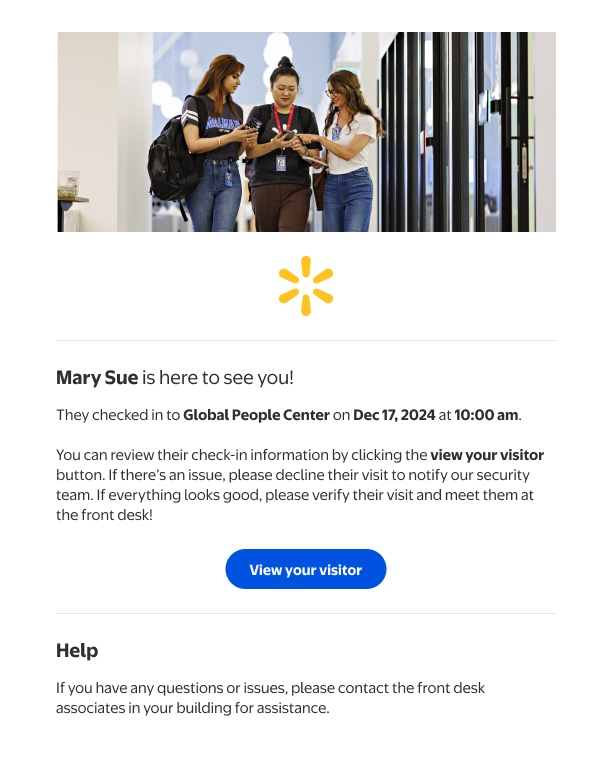
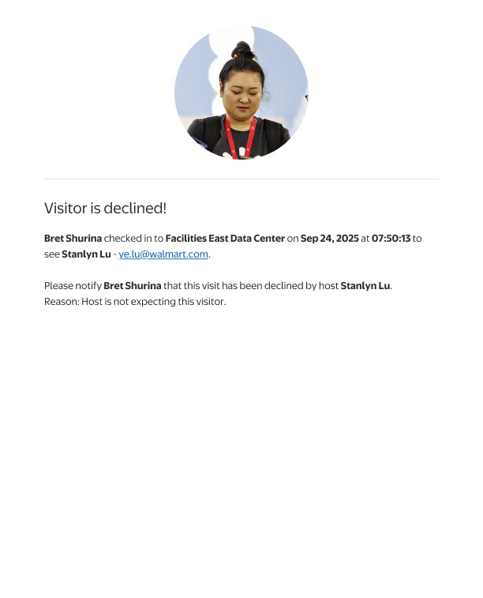
Accessibility built into the practice
A wheelchair user at the Bentonville HQ turnstile had no guaranteed accessible check-in path. A security associate had flagged this gap for over a year before design started. I built the interaction model keyboard-navigation first, so every touch interaction had a keyboard equivalent from day one.
Before any screen went to engineering, it was validated against a shared accessibility checklist the team maintained across all products. Annotations were embedded directly in the Figma file (contrast ratios, focus order, screen reader labels) so developers had no ambiguity at handoff. Structured QA notes tracked every identified issue through to resolution before launch.
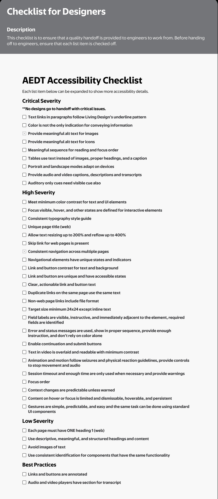

What changed, and how we measured it
The system shipped to all US campuses and then rolled out to Bengaluru and other India locations - becoming the global standard for Walmart campus visitor management. Deployment is a milestone. Here's what actually changed:
Early qualitative feedback from security, reception, and facilities teams showed smoother front-desk operations, fewer repeated check-ins for multi-building visits, and faster host response. The admin portal eliminated the most common manual override (associates re-entering visitor data after kiosk timeouts), which had driven a significant share of front-desk escalations at high-traffic campuses.
What I'd do differently
This project delivered what it set out to. But looking back at the constraints and trade-offs, three things stand out:
-
I'd instrument the service earlier. We had almost no baseline data when we started - check-in times, preregistration rates, accessibility-related escalations were all unmeasured. I ended up building measurement into the system during design, but it took advocacy to get engineering to prioritize it. Measurement should have been scoped into the project from the start.
-
I'd push harder for a pilot-then-scale rollout. We launched across all US campuses nearly simultaneously. In retrospect, a single high-traffic campus pilot with a six-week learning period would have surfaced the group-booking edge cases we discovered through support tickets post-launch - and saved two engineering sprints of fixes.
-
I underestimated the front-desk associate as a design partner. I interviewed them early, but treated them as user-research subjects. I should have brought two of them into the design review process as co-reviewers - they caught workflow gaps in beta testing that I missed because I was too close to the designed flow.